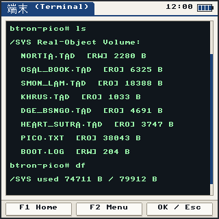
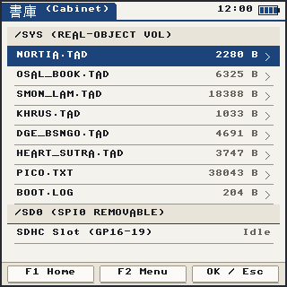
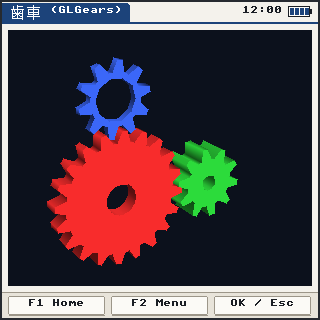
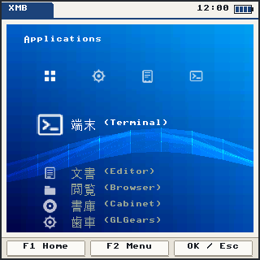
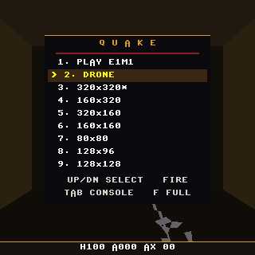

戦術通信・産業エッジにおける位置づけ (Tactical & Industrial Edge Positioning)
低 SWaP 偵察用 LoRa メッシュ通信機 (Low-SWaP LoRa Communicator)
セルラー網や衛星リンクが遮断された前線偵察・災害現場において、ポケットサイズの低消費電力 LoRa メッシュ端末は不可欠である。POCKET シェルは 264 KB SRAM クラスの RP2040/RP2350 マイコン上で起動後の動的メモリ確保をゼロに抑え（NASA JPL Rule 3）、LoRa チャット・連絡先・UART 端末・TAD 手引書閲覧・およびデュアルコア PicoGL 3D 描画までを単一ファームウェアで完結させる。
Engineered for off-grid reconnaissance and contested DDIL environments, POCKET executes on 264 KB SRAM RP2040/RP2350 microcontrollers with zero post-boot heap allocation (NASA JPL Rule 3), integrating LoRa mesh chat, address directories, UART console diagnostics, local TAD manuals, and dual-core PicoGL 3D rendering.
現場 PLC 試運転・計測ペンダント (Pocket Industrial Edge Pendant)
工場 PLC の現場デバッグ、CNC/ロボットティーチングペンダント、携帯型オシロスコープ、および環境計測ロガーでは、高価な Linux SoM を使わず即座に起動する確定論的 HMI が求められる。POCKET の SegUI 4 帯レイアウト（STATUS / TABBAR / BODY / SOFTKEY）は画面高さ予算をコンパイル時に保証し、SPI0 SDHC ボリューム操作と PL011 UART ミラーリングを標準提供する。
For PLC commissioning tools, robotics teach pendants, and portable edge instruments, POCKET eliminates heavyweight Linux SoM boot latency. Its statically budgeted 4-band SegUI architecture guarantees deterministic frame timing alongside native SPI0 SDHC volume browsing and PL011 UART0 console mirroring.
対象解像度と SegUI 4 帯予算 (Requested Resolutions & Band Budget)
320×320 未満のうち BAND（≤128×160）および KEY（<100×100）を除く全モードが POCKET に割り当てられる（240×320 は 320×240 の縦位置として POCKET を維持）。実装ソース：src/desktop/ui/pocket/、src/desktop/industrial/segui/segui_palm.c、src/cores/core_pico.c。
- STATUS22 pxclock, battery & link
- TABBAR22 pxomitted on single-tab forms
- BODYstretchonly stretchable band
- SOFTKEY26 pxthree tactile captions
| BTRON_RES | 解像度 (Pixels) | プロファイル名 | 備考 |
|---|---|---|---|
| BTRON_RES_VGA_320X240 | 320×240 / 240×320 | QVGA Pocket | 横・縦双方で POCKET 維持 |
| BTRON_RES_HQVGA_240X160 | 240×160 | HQVGA | 横型コンパクト計測機・携帯機 |
| BTRON_RES_S40_208X208 | 208×208 | Series 40 Square | 正方形エッジ計器パネル |
| BTRON_RES_S60_176X208 | 176×208 | Series 60 | 片手テンキー通信機 |
| BTRON_RES_QCIF_176X144 | 176×144 | QCIF | 低帯域映像・計測モニター |
| BTRON_RES_GB_160X144 | 160×144 | Game Boy | 省電力反射型 LCD ハンドヘルド |
POCKET — PicoCalc 320×320 実機フレーム (12 Native SegUI Captures)
掌の基準パネルである PicoCalc（320×320、segui_profile_picocalc）上で動作する全 12 アプリの実動画面。ランチャー、UART 端末、ゼロヒープエディタ、TAD ブラウザ、LoRa メッシュチャット、さらにデュアルコア PicoGL による 9–14 FPS の Quake e1m1 までを単一環境で実装。
Twelve live captures from the 320×320 PicoCalc reference shell (segui_profile_picocalc): Palm-style 3×3 launcher, UART console, LoRa mesh chat, hardware preferences, XMB ribbon, and dual-core PicoGL 3D.


SEGUI_W_TEXT コンソールリング。
/SYS 領域へ直接保存するゼロヒープ・スクラッチパッドエディタ。

/SYS RAM ボリュームおよび SPI0 SDHC カード上の実身を直接参照。



xmb_pico_paint）。